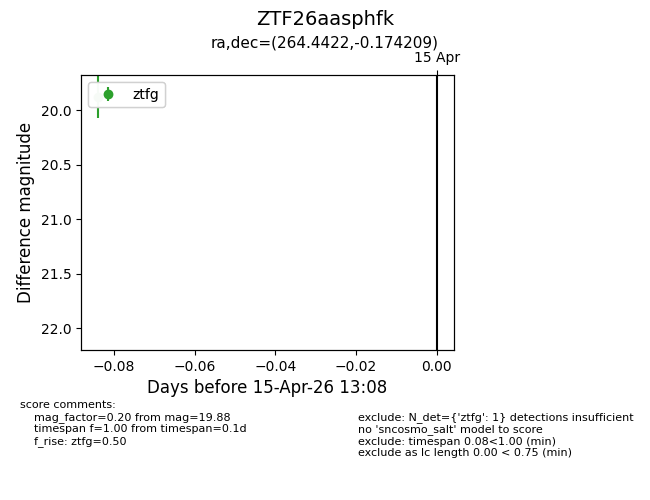
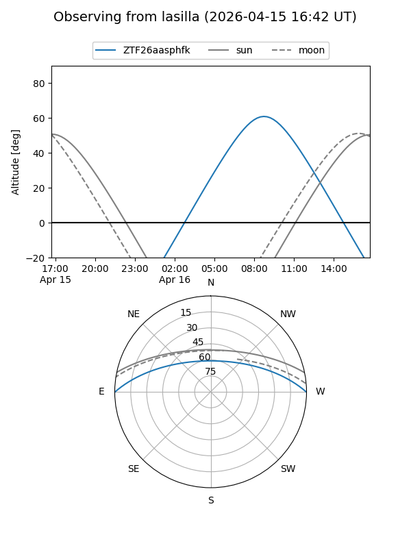
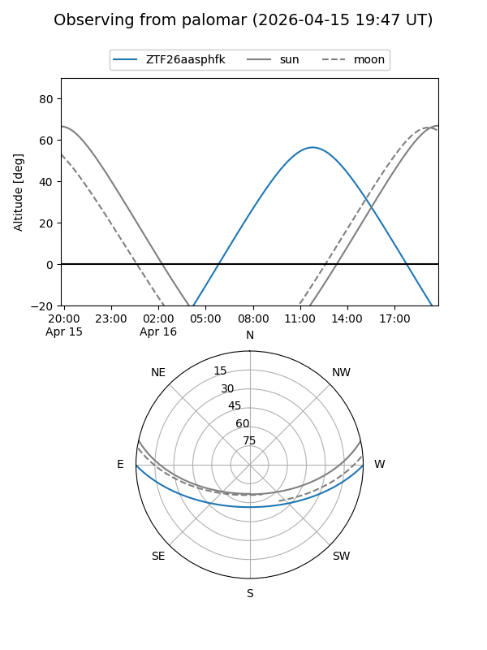
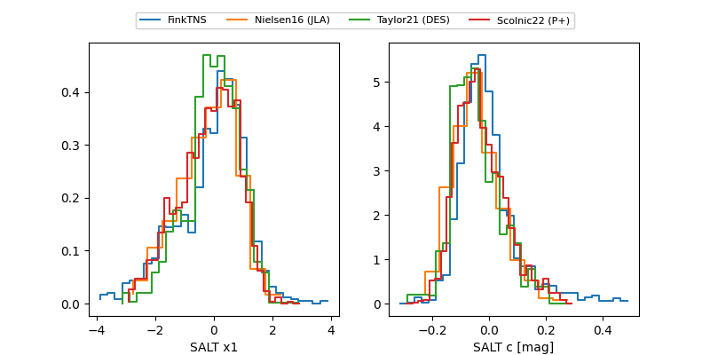

ZTF26aasphfk
Target ZTF26aasphfk at 2026-04-15 13:16
Aliases and brokers:
FINK: link
Lasair: link
ALeRCE: link
alt names
ZTF26aasphfk (ztf,fink_ztf)
Coordinates:
equatorial (ra, dec) = 264.4422,-0.17421
equatorial (HMS+DMS) = 17:37:46.13,-00:10:27.15
galactic (l, b) = (24.1385,+16.24771)
Flags:
Photometry:
last ztfg=19.88
1 ztfg detections
Lightcurve

Visibility


Additional plots
